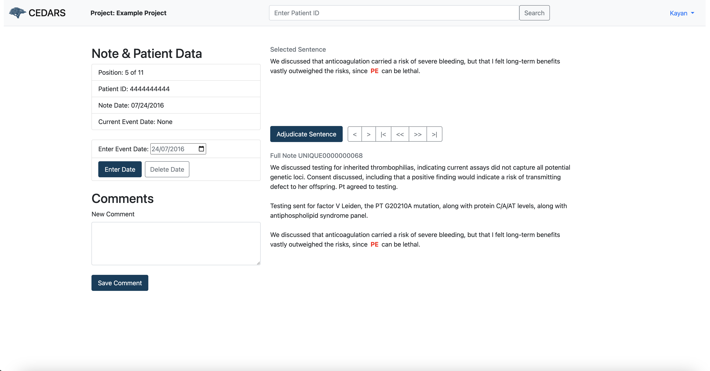

CEDARS Annotator Manual
Introduction
This short manual is intended for data abstractors who will enter information about clinical events detected by CEDARS.
CEDARS is a data pipepline set up to optimally present you with sentences drawn from a patient's medical record and potentially indicating the presence of a clinical event. Sentence detection is automatic and based on the words used, but often those sentences do not actually represent a true event. For example, the following sentence does not signal an actual new thrombotic episode:
"The patient was ruled-out for deep vein thrombosis last night."
If sentence detection is based only on reporting sentences with the words "deep vein thrombosis", such a negative finding will be reported. In this case, you would not report an event and move on to the next sentence. Event detection approaches used by your CEDARS system administrator will vary, and some queries will be more selective than others, but generally the system will be set up to detect as many events as possible, at the cost of having a certain number of false positive findings. The intent here is for CEDARS to minimize the number of missed events, even if this approach results in you having to review a greater number of sentences.
Sentences are presented in chronological order. Once you have identified and dated a clinical event, CEDARS might be set up by bypass all following sentences for this patient and move on to the next patient. This approach will be used when your system administrator only aims at capturing the first instance of an event of interest. Also, once you have evaluated all sentences of interest for a given patient, CEDARS will move on to the next patient seamlessly. This sequence of events is illustrated below:

If you adjudicate a sentence as reporting no event, CEDARS will present the next sentence for the same patient (#1). On the other end, if you enter an event date, CEDARS will move to the next unreviewed sentence before the event date. If there are no sentences left to review before the event, the GUI moves to the next patient (#2) and the process is repeated with the following record (#3 and #4), until all selected sentences have been reviewed.
Login
Go to your CEDARS URL and use the credentials provided by the administrator.
Find Clinical Events
As soon as you are logged in, CEDARS will start looking for the next available patient with information to review. It might take a few moments before the first sentence is presented to you. The following is an example from a simulated cohort:

Keywords or concepts are highlighted in red to help you locate them in the text.
Evaluating a Sentence
Only one sentence to review will be presented at any given time. It can be found at the beginning of the section titled "Selected sentence:".
Your first task is to determine whether or not the sentence refers to an actual clinical event of interest, i.e. if the sentence is a true positive. Typically you will be able to make up your mind just by reading the sentence itself. If the sentence is ambiguous and you would like to obtain more context, you can review the note or report from which the sentence was drawn, situated at the bottom of the screen under the section "Selected note:". Also, completely at the bottom of the screen you will find a list of tags with associated data. The information presented here will vary, but would typically include the patient's name, the type of note, the author etc.
For your reference, the date of entry for the note from which the sentence was drawn is indicated below the sentence, along with sentence position (first, second, third in line for review, etc) and patient ID.
Annotating a Negative Sentence
In many cases, the sentence you are looking at will be a false positive, i.e. it does not represent the kind of event you were tasked to report. In this case, simply click on the button "ADJUDICATE SENTENCE". This will mark the sentence as such and move to the next one in line.
Move Between Sentences Within a Patient's Record
Often the sentence and note presented to you will hint at a possible event but remain ambiguous, or an event will be obvious but the timing unclear. In such cases, you can move from sentence to sentence by using the "<<< PREVIOUS" and "NEXT >>>" buttons. You will go from sentence to sentence, following the timeline of electronic record notes/reports. Note that using previous/next will not annotate sentences or otherwise enter information in the CEDARS database.
Entering Information About a Patient
Entering an Event Date
Any known event date will be displayed at the beginning of section titled "Event date:". Most of the time this field will be empty, since generally speaking CEDARS projects aim to determine event dates for a cohort for which no prior information exists. However, CEDARS can also be used to verify known event dates, in which case the interface might display an event date for a patient you have not yet assessed. Your CEDARS system administrator will discuss this aspect with you before starting the project.
Once you have determined a clinical event did indeed occur, the next step is to assess its timing. As noted above, you might have to travel between sentences or consult complete notes to confirm the date. Once you are ready to enter this information, click on the data entry field under the "ENTER NEW DATE" button. You will be prompted with a calendar. Once the date displayed is correct, press on button "ENTER NEW DATE".
Given the nature of clinical narratives, not all events will be precisely dated. For example, a clinician might refer to an event only with the month and year, not the day. Such information can still be entered by using simple approximation guidelines. In CEDARS, if only the year of an event is known, enter July 1st of that year (e.g. "2020-07-01"). If only they year and month are known, enter the 15th day of that month/year (e.g. "2020-11-15" if the event was in November of 2020). When approximating a date, it is good practice to document this detail in a comment (see below).
Deleting an Event Date
It is possible to replace an erroneous date by entering a new one in the date entry field. If there was actually no event, the previously entered date can be deleted by clicking on button "DELETE OLD DATE".
Entering Comments About a Patient
At any point you can enter comments about a patient in the data entry field under "New comments:", however those will be saved only if you 1) adjudicate the sentence or 2) enter an event date.
Search for a Specific Patient
If you want to go back to a specific patient later on, take note of the patient ID number. After logon, CEDARS will automatically present you with the next available patient to review, so if you have already annotated all sentences for a given patient, the only way to find that record again is to do a search. In this case, simply enter the patient ID number under in the box under "Search for patient" and click button "SEARCH". If you click "SEARCH" on an empty field, CEDARS will bring up the next available patient for you to review.
Record Locking
Only one end user at a time can review or enter information about any given patient in the CEDARS database. If someone else is already looking at a specific patient record, you will be locked from accessing it.